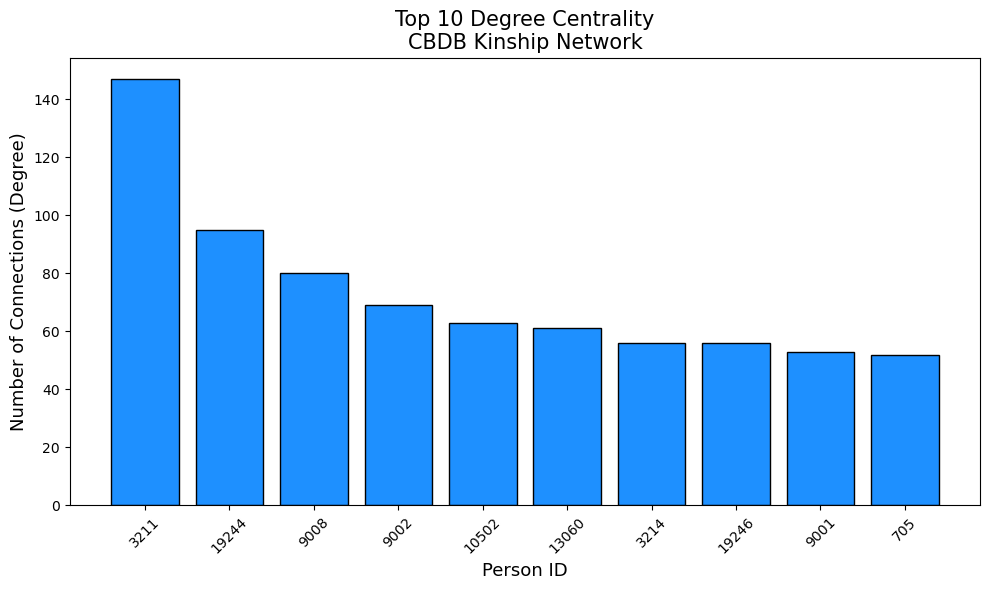
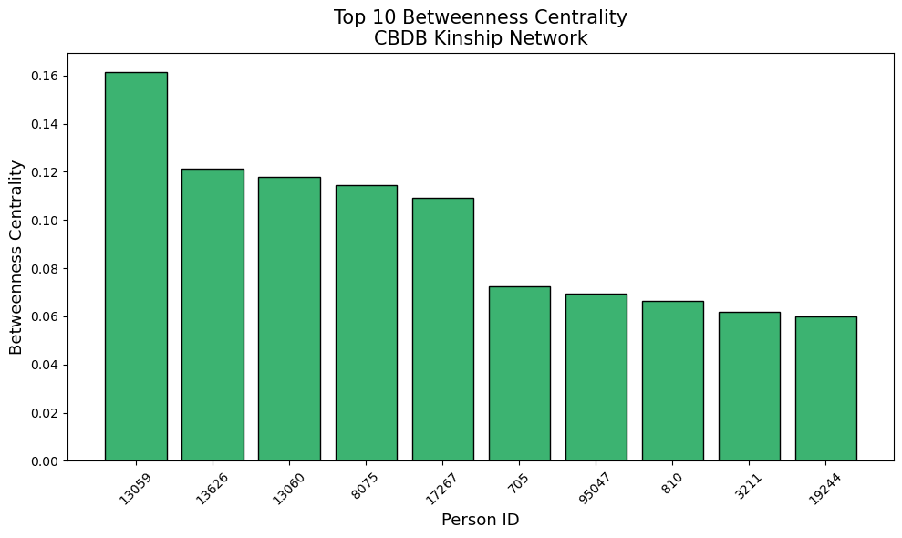
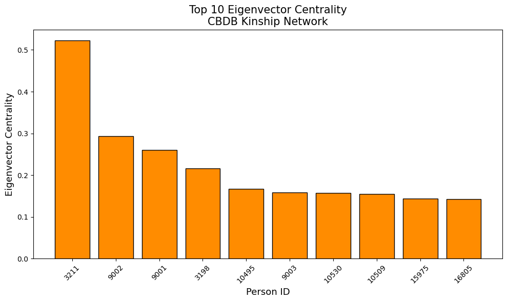

#Libraries listed below
import sqlite3
import pandas as pd
import networkx as nx #Our Python network analysis library
import matplotlib.pyplot as plt
import matplotlib.patches as mpatches
import matplotlib.cm as cm
import random
from community import community_louvain
import numpy as np
from collections import Counter
from pyvis.network import Network
from scipy import stats
import seaborn as sns
from collections import OrderedDictSOCI 415 Network Analysis - CBDB Dataset
Python
network analysis
Using Network Analysis to Analyze The China Biographical Dataset
0.0 Prerequisites
- SOCI 415 Network Analysis Intro Notebook
- Kinmatrix Dataset Notebook
The China Biographical Database is a freely accessible relational database with biographical information about approximately 641,568 individuals as of August 2024, currently mainly from the 7th through 19th centuries. It was developed as a collaborative project between scholars at Harvard University, Academia Sinica, and Peking University. The data is useful for statistical, social network, and spatial analysis as well as serving as a biographical reference for Chinese History.
This dataset has many variables and is far more complex than the KINMATRIX Dataset we have used before, the dataset is far larger and contains more traditional networks as opposed to KINMATRIX’s ego networks. If you wish to read more about the structure of the dataset you can follow the link Structure of CBDB.
1.0 Data Loading and Intro
As with all of our notebooks so far we will begin with loading all of our libraries. This library list is similar to the one used in the KINMATRIX data analysis.
Now that we have all of the libraries loaded in for our analysis we can load our data. The dataset is a .db file meaning it is a database. The CBDB data is extensive and has lots of variables within it, in order to access them we have to choose a table from our .db file. A table is a structured collection of data organized in rows and columns, similar to a spreadsheet. Each table contains records (rows), and every record has fields (columns).
Display all of the tables in the dataset .db file.
db_path = r'datasets\latest.db' #path
conn = sqlite3.connect(db_path)
cursor = conn.cursor()
# List all tables
cursor.execute("SELECT name FROM sqlite_master WHERE type='table';")
tables = cursor.fetchall()
print("Tables in database:", tables)
conn.close()The output of the cell above is a list of all of the tables in the dataset and we can see that the list is extensive. The one we are most intested in is called KIN_DATA. It contains the necessary information to construct our network. We will now load the table. The output of this cell will be all of the variables within the table ‘KIN_DATA.’
# Connect to the database
conn = sqlite3.connect(db_path)
df = pd.read_sql_query("SELECT * FROM KIN_DATA", conn)
# Show the first few rows
print(df.head())
conn.close()We can see from the output that the dataset contains both English and Chinese data so we will have to be careful to select the English language variables. We have now loaded the correct data and just like with the KINMATRIX Dataset we will build a NetworkX Graph and print the number of nodes and edges.
# Create an empty graph
G = nx.Graph()
# Add edges with kinship type as edge attribute
for _, row in df.iterrows():
person = row['c_personid']
kin = row['c_kin_id']
kin_type = row['c_kin_code']
G.add_edge(person, kin, kinship=kin_type)
print(f"Number of nodes: {G.number_of_nodes()}")
print(f"Number of edges: {G.number_of_edges()}")We have over 278,000 nodes and a similar amount of edges. This is a far bigger dataset than we have previously used. The is a very extensive dataset where one of these networks is larger than all of the networks for the KINMATRIX Dataset.
We already ran into computational problem when analyzing the KINMATRIX Dataset so we will have to be careful. We can not visualize the full network and all complex calculations like centrality will take a long time.
2.0 Louvain and Community Clusters
The first thing we will do for our analysis is look for are smaller sub-groups. This is analysis we could not do for the KINMATRIX Dataset as it was an ego-centric network. This is very popular technique in network analysis as it helps uncover hidden group structure in very expansive and complex networks.
In our case large networks (like the CBDB) can be overwhelming and computationally intensive to study. Unlike the KINMATRIX dataset where the data was naturally divided into countries and provinces there are far less clear subgroups in this dataset. By identifying clusters, sociologists can summarize, visualize, and understand the major subgroups and their relationships, making the network more interpretable. To preform this community analysis we will need to introduce some more terminology.
Cohesive subgroups in network analysis refer to clusters of nodes within a network that are more densely connected to each other than to the rest of the network. These subgroups indicate areas of high interaction or strong relationships within the larger network. Identifying cohesive subgroups helps in understanding the structure and dynamics of the network, such as how information or influence flows within and between these groups. The process of finding cohesive subgroups within networks is called cohesive group analysis.
A clique is a subset of nodes within a graph where every node is directly connected to every other node in the subset. This means that in a clique, all possible edges between the nodes are present, making it a maximally connected subgraph. All nodes are that are by themselves are inherently a clique (a 1-clique)
Let’s see what this look like on an example network before moving towards our real data.
#Create our network
G_cliques_example = nx.Graph()
edges_list = [(0,1),(0,2),(0,3),(0,4),(1,2),(2,3),(3,4),(1,4),(2,4),(1,3),(4,5),(5,6)]
G_cliques_example.add_edges_from(edges_list)
pos = nx.spring_layout(G_cliques_example, seed=1000)
#Find our cliques and print where they are
cliques = [x for x in nx.find_cliques(G_cliques_example)]
print(cliques)
#Draw our graph
nx.draw(G_cliques_example,pos=pos, with_labels=True, edgecolors="black", node_color = "bisque", node_size=800)We can see that there are three cliques in this network: \((4, 0, 1, 2, 3)\), \((4, 5)\), and \((6, 5)\):
We can colour them green to be more easily identifiable.
#Set the figure size (24,6) not (8,6) because we have 3 graphs to show
fig, axes = plt.subplots(1, 3, figsize=(24, 6))
fig.set_facecolor('lightblue')
#Create our network
G_cliques_example = nx.Graph()
edges_list = [(0,1),(0,2),(0,3),(0,4),(1,2),(2,3),(3,4),(1,4),(2,4),(1,3),(4,5),(5,6)]
G_cliques_example.add_edges_from(edges_list)
pos = nx.spring_layout(G_cliques_example, seed=1000)
#Find our cliques and print them
cliques = [x for x in nx.find_cliques(G_cliques_example)]
print(cliques)
#Colour our cliques
clique_1 = ["mediumseagreen", "mediumseagreen", "mediumseagreen", "mediumseagreen", "mediumseagreen", "bisque", "bisque"]
clique_2 = ["bisque", "bisque", "bisque", "bisque", "mediumseagreen", "mediumseagreen", "bisque"]
clique_3 = ["bisque", "bisque", "bisque", "bisque", "bisque", "mediumseagreen", "mediumseagreen"]
#Draw our cliques
nx.draw(G_cliques_example, ax=axes[0], pos=pos, with_labels=True, edgecolors="black", node_color = clique_1, node_size=800)
nx.draw(G_cliques_example, ax=axes[1], pos=pos, with_labels=True, edgecolors="black", node_color = clique_2, node_size=800)
nx.draw(G_cliques_example, ax=axes[2], pos=pos, with_labels=True, edgecolors="black", node_color = clique_3, node_size=800)Nodes can also be in multiple cliques.
#Create our example graph
G_cliques_example = nx.Graph()
edges_list = [(0,1),(0,2),(0,3),(0,4),(1,2),(2,3),(3,4),(1,4),(2,4),(1,3),(4,5),(5,6)]
G_cliques_example.add_edges_from(edges_list)
pos = nx.spring_layout(G_cliques_example, seed=1000)
#Find the cliques
cliques = [x for x in nx.find_cliques(G_cliques_example)]
print(cliques)
#For loop
node_counts = {}
for clique in cliques: #for each clique in the list of cliques...
for node in clique: # for each node in each clique...
if node in node_counts: #checks whether the current node already exists as a key in the node_counts dictionary
node_counts[node] += 1 #if it is in the dictionary, increase it's value by 1
else:
node_counts[node] = 1 #if it isn't, dont change
#Colour our nodes
colors = []
for node in G_cliques_example.nodes():
if node_counts[node] == 1:
colors.append("lightgreen")
elif node_counts[node] == 2:
colors.append("forestgreen")
elif node_counts[node] == 3:
colors.append("orange")
else:
colors.append("red")
#Draw our network
nx.draw(G_cliques_example,pos=pos, with_labels=True, edgecolors="black", node_color = colors, node_size=800)
patch_green = mpatches.Patch(color='lightgreen', label='node in one clique')
patch_forest = mpatches.Patch(color='forestgreen', label='node in two cliques')
plt.legend(handles=[patch_green, patch_forest])
plt.show()2.1 Network-level analysis: Clusters and clustering coefficients
A cluster (also known as a community) is a set of nodes in a graph that are densely connected to each other but sparsely connected to nodes in other clusters. For example, in a social network, a cluster might represent a group of people who frequently interact with each other but have fewer interactions with people outside the group. Community detection is the process of finding such communities within nodes.
Before diving into community detection, we first need to understand modularity. Modulaity is a numerical measure for the community structure of a graph: it compares the density of edges within the communities of a network to the density of edges between communities. A positive modularity value suggests a strong community structure, while values closer to zero or negative indicate that the divisions are no better than random.
The Louvain algorithm is a community detection method in networks that aims to optimize modularity. By optimizing modularity, the Louvain algorithm effectively uncovers natural divisions in the network where connections are dense within clusters and sparse between them, thus identifying meaningful community structures.
First, each node is assigned to its own community, and nodes are then iteratively moved to neighboring communities if it increases the modularity. In the second phase, the algorithm creates a new network where each community from the first phase is treated as a single node, and the process is repeated. This hierarchical approach continues until no further modularity improvements can be made, resulting in a final set of communities that maximize modularity.
Let’s first try running the Louvain Algorithm on a random graph to demonstrate how it works before running it on our real data.
#Set the seed so it is reproducable
random.seed(1)
n = 20 # number of nodes
d = 3 # degree of each node
# Generate the random regular graph
rr_graph = nx.random_regular_graph(d, n)
partition = community_louvain.best_partition(rr_graph)
pos = nx.spring_layout(rr_graph, seed=42)
num_communities = max(partition.values()) + 1
cmap = cm.get_cmap('viridis', num_communities)
nx.draw_networkx_nodes(
rr_graph, pos, node_size=40, cmap=cmap, node_color=list(partition.values())
)
nx.draw_networkx_edges(rr_graph, pos, alpha=0.5)
plt.show()We can see by the node coloring that by optimizing modularity the Louvain Algorithm has found smaller subgroups within our random network. Now we can try it on our real data.
2.2 Louvain Run on Real Data
As with before we will set a random seed so that the analysis is reporducable. We will also print out average community size along with the size of the largest and smallest communities. We will also print the top 10 largest communities and their sizes.
We will also be working with the largest connected component for this analysis.
#Set a seed for reproducability of our results
np.random.seed(1)
# Load kinship data into DataFrame
conn = sqlite3.connect(db_path)
df = pd.read_sql_query("SELECT c_personid, c_kin_id, c_kin_code FROM KIN_DATA", conn)
conn.close()
# Build the Graph
G = nx.Graph()
for _, row in df.iterrows():
person = row['c_personid']
kin = row['c_kin_id']
kin_type = row['c_kin_code']
G.add_edge(person, kin, kinship=kin_type)
# Work with the largest connected component
largest_cc = max(nx.connected_components(G), key=len)
G_sub = G.subgraph(largest_cc).copy()
print(f"Largest connected component nodes: {G_sub.number_of_nodes()}")
# Run Louvain Community Detection
print("Running Louvain algorithm...")
partition = community_louvain.best_partition(G_sub)
# Community Analysis Output
num_communities = len(set(partition.values()))
print(f"In our data Louvain has detected {num_communities} communities.")
# Count community sizes
community_sizes = Counter(partition.values())
print(f"\nMetrics about Community size:")
print(f"Average community size: {np.mean(list(community_sizes.values())):.1f}")
print(f"Largest community: {max(community_sizes.values())} people")
print(f"Smallest community: {min(community_sizes.values())} people")
#Show top 10 largest communities
print(f"\nLargest Communities:")
for i, (comm_id, size) in enumerate(community_sizes.most_common(10)):
print(f"Community {comm_id}: {size:,} people")
# Calculate modularity
modularity = community_louvain.modularity(partition, G_sub)
print(f"\nModularity Score: {modularity:.4f}")
print("(Higher modularity indicates stronger community structure)")
#Distributon Histogram of Community Size
fig, ax = plt.subplots(figsize=(15, 12))
fig.suptitle('CBDB Kinship Network Community Analysis', fontsize=16, fontweight='bold')
# Community size histogram
ax.hist(list(community_sizes.values()), bins=30, alpha=0.7, color='skyblue', edgecolor='black')
ax.set_xlabel('Community Size (number of people)')
ax.set_ylabel('Number of Communities')
ax.set_title('Distribution of Community Sizes')
ax.grid(True, alpha=0.3)
plt.tight_layout()
plt.show()From the visualization we can see most communities are around 200 - 400 nodes in size.
Lets look at two of these communities in more detail, we will look at one average sized one and one large one.
The two we will use are:
- Community 20: 703 nodes with 940 edges
- Community 125: 308 nodes with 392 edges
np.random.seed(1)
def visualize_cbdb_community(G_sub, partition, community_id, max_nodes=1000):
community_nodes = [str(node) for node, comm_id in partition.items() if comm_id == community_id]
print(f"Community {community_id}: {len(community_nodes)} people")
# Create subgraph with string node IDs
subgraph = G_sub.subgraph([int(node) for node in community_nodes])
print(f"Showing {len(community_nodes)} people, {subgraph.number_of_edges()} relationships")
net = Network(height="700px", width="100%", bgcolor="#ffffff", notebook=True)
for node in community_nodes:
degree = subgraph.degree[int(node)]
size = max(15, min(35, 15 + degree))
net.add_node(str(node),
label=str(node),
size=size,
color="#3498db",
title=f"Person {node}\nConnections: {degree}")
for u, v, data in subgraph.edges(data=True):
net.add_edge(str(u), str(v), color="#cccccc", title=f"Kinship: {data.get('kinship','family')}")
filename = f"community_{community_id}.html"
net.show(filename)
print(f"Interactive network: {filename}")
#Run the function
visualize_cbdb_community(G_sub, partition, 20)
visualize_cbdb_community(G_sub, partition, 125)We will again use a PyVis visualization, just like with the KINMATRIX Visualizations we can zoom and pan around and hover on the nodes. This time you can also drag the nodes and the surrounding nodes will move like bacteria under a microscope.
2.3 Macro Stats and Dynasties
To get a better understanding of our communities we will look at some summary statistics. Let’s briefly define what these macro statistics will be:
- Diameter: The longest shortest path between any two nodes in the network or component. This is a way to measure how “wide” our network is.
- Average Path Lenght: The average number of steps along the shortest paths for all possible pairs of nodes in the graph
- Average Clustering: The likelihood that any two neighbors of a node are also connected to each other. Higher values mean people in the community tend to form “groups”.
We will also look at degree centrality, density and number of nodes.
np.random.seed(1)
def macro_stats(G_sub, partition, community_id):
nodes = [n for n, c in partition.items() if c == community_id]
subg = G_sub.subgraph(nodes)
stats = {}
if nx.is_connected(subg):
stats['diameter'] = nx.diameter(subg)
stats['avg_path_length'] = nx.average_shortest_path_length(subg)
else:
# statistics of largest connected component only
lcc = subg.subgraph(max(nx.connected_components(subg), key=len))
stats['diameter'] = nx.diameter(lcc)
stats['avg_path_length'] = nx.average_shortest_path_length(lcc)
degrees = dict(subg.degree())
max_degree = max(degrees.values())
n = len(degrees)
if n > 1:
degree_centralization = sum(max_degree - d for d in degrees.values()) / ((n-1)*(n-2))
else:
degree_centralization = 0
stats['degree_centralization'] = degree_centralization
stats['avg_clustering'] = nx.average_clustering(subg)
stats['density'] = nx.density(subg)
stats['n_nodes'] = n
return stats
#Print:
stats_20 = macro_stats(G_sub, partition, 20)
stats_125 = macro_stats(G_sub, partition, 125)
print("Community 50 macro stats:", stats_20)
print("Community 125 macro stats:", stats_125)We now have more quantifiable metrics for our visualizations. Let’s contunue our analysis with finding which dynasties these communities are primarily from.
np.random.seed(1)
# Community 125
personids_125 = [n for n, c in partition.items() if c == 125]
conn = sqlite3.connect(db_path)
ids_tuple_125 = tuple(personids_125)
query_125 = f'''
SELECT c_personid, c_dy FROM BIOG_MAIN
WHERE c_personid IN {ids_tuple_125}
'''
df_dyn_125 = pd.read_sql_query(query_125, conn)
# Community 20
personids_20 = [n for n, c in partition.items() if c == 20]
ids_tuple_20 = tuple(personids_20)
query_20 = f'''
SELECT c_personid, c_dy FROM BIOG_MAIN
WHERE c_personid IN {ids_tuple_20}
'''
df_dyn_20 = pd.read_sql_query(query_20, conn)
conn.close()
# Show the most common dynasty codes
print("Community 125 dominant dynasties:")
print(df_dyn_125['c_dy'].value_counts().head(3))
print("Community 20 dominant dynasties:")
print(df_dyn_20['c_dy'].value_counts().head(3))We can see that Community 125 is primarily from Dynasty 6, and Community 50 is primarily from Dynasty 15, but this does not tell us much we need to translate 6 and 15 into real dynasty names. These values represent names of real dynasties, but without the key this output does not mean anything.
Lets now map these values to real dynasty names.
np.random.seed(1)
conn = sqlite3.connect(db_path)
dynasty_mapping = pd.read_sql_query('SELECT c_dy, c_dynasty FROM DYNASTIES', conn)
conn.close()
def get_dynasty_breakdown(df_dyn, dynasty_mapping):
df_merged = df_dyn.merge(dynasty_mapping, on='c_dy', how='left')
return df_merged['c_dynasty'].value_counts()
print("Community 125 top 3 dynasties:")
print(get_dynasty_breakdown(df_dyn_125, dynasty_mapping).head(3))
print("Community 20 top 3 dynasties:")
print(get_dynasty_breakdown(df_dyn_20, dynasty_mapping).head(3))Now we know that Community 125 is primarily made up of individuals from the Tang Dynasty and Community 50 is primarily made up of individuals from the Song Dynasty.
2.4 Coloring Nodes
Like with the KINMATRIX Dataset we will color our Pyvis visualizations by a variable of interest. In this case we will color Community 125 by gender where male is purple and women are yellow. There are no unknown gender variables in either of these communities so we can just have two colors in our color map.
np.random.seed(1)
# Get all node and person id's
all_personids = list(set([n for n in partition.keys()]))
conn = sqlite3.connect(db_path)
query = f'''
SELECT c_personid, c_female FROM BIOG_MAIN
WHERE c_personid IN ({','.join(str(pid) for pid in all_personids)})
'''
df_gender = pd.read_sql_query(query, conn)
conn.close()
# Function to map female/male from number 1/0
def sex_label(val):
return 'female' if val == 1 else ('male' if val == 0 else 'unknown')
gender_dict = {row['c_personid']: sex_label(row['c_female']) for _, row in df_gender.iterrows()}
def visualize_cbdb_community_gender(G_sub, partition, community_id, gender_dict, max_nodes=1000):
community_nodes = [str(node) for node, comm_id in partition.items() if comm_id == community_id]
print(f"Community {community_id}: {len(community_nodes)} people")
if len(community_nodes) > max_nodes:
print(f"Sampling {max_nodes} nodes for performance...")
subgraph_full = G_sub.subgraph([int(node) for node in community_nodes])
degrees = dict(subgraph_full.degree())
sorted_nodes = sorted(community_nodes, key=lambda x: degrees.get(int(x), 0), reverse=True)
community_nodes = sorted_nodes[:max_nodes//2] + random.sample(sorted_nodes[max_nodes//2:], max_nodes//2)
subgraph = G_sub.subgraph([int(node) for node in community_nodes])
print(f"Showing {len(community_nodes)} people, {subgraph.number_of_edges()} relationships")
net = Network(height="700px", width="100%", bgcolor="#ffffff", notebook=True)
color_map = {'male': '#800080', # purple
'female': '#FFFF00'} # yellow
for node in community_nodes:
gender = gender_dict.get(int(node), 'unknown')
degree = subgraph.degree[int(node)]
size = max(15, min(35, 15 + degree))
net.add_node(str(node),
label=str(node),
size=size,
color=color_map.get(gender, '#bdbdbd'),
title=f"Person {node}\nConnections: {degree}\nGender: {gender}")
for u, v, data in subgraph.edges(data=True):
net.add_edge(str(u), str(v), color="#cccccc", title=f"Kinship: {data.get('kinship','family')}")
filename = f"community_{community_id}_gender.html"
net.show(filename)
print(f"Interactive network: {filename}")
visualize_cbdb_community_gender(G_sub, partition, 125, gender_dict)We can see that most of the nodes are male especially the most central nodes, we will come back to this later, but think about why that is? Continuing on with the notion of centrality lets color the nodes in Community 20 with a color gradient where the nodes with the lowest degree centrality will be blue and the node with the highest will be red. This will serve as an intuitive method to visualize degree centrality.
np.random.seed(1)
def visualize_cbdb_community_degree(G_sub, partition, community_id, max_nodes=1000):
community_nodes = [str(node) for node, comm_id in partition.items() if comm_id == community_id]
print(f"Community {community_id}: {len(community_nodes)} people")
subgraph = G_sub.subgraph([int(node) for node in community_nodes])
print(f"Showing {len(community_nodes)} people, {subgraph.number_of_edges()} relationships")
net = Network(height="700px", width="100%", bgcolor="#ffffff", notebook=True)
degrees = dict(subgraph.degree())
deg_values = [degrees[int(node)] for node in community_nodes]
min_deg, max_deg = min(deg_values), max(deg_values)
norm = plt.Normalize(min_deg, max_deg)
cmap = plt.get_cmap('coolwarm')
for node in community_nodes:
degree = degrees[int(node)]
size = max(15, min(35, 15 + degree))
rgb_vals = cmap(norm(degree))[:3]
hex_color = '#%02x%02x%02x' % tuple(int(x*255) for x in rgb_vals)
net.add_node(str(node),
label=str(node),
size=size,
color=hex_color,
title=f"Person {node}\nConnections: {degree}")
for u, v, data in subgraph.edges(data=True):
net.add_edge(str(u), str(v), color="#cccccc", title=f"Kinship: {data.get('kinship','family')}")
filename = f"community_{community_id}_degree.html"
net.show(filename)
print(f"Interactive network: {filename}")
print(f"Color gradient: low degree (blue) to high degree (red).")
visualize_cbdb_community_degree(G_sub, partition, 20)2.5 Visualization Discussion
In small groups of 3-4 look at the visualizations from this dataset and compare them to our pyVis visualizations from the KINMATRIX Dataset. Try to be specific and use the terminology introduced in the introductory notebook. How are they similar and how are they different?
3.0 Degree Centrality for Important Family Members
We can see from our community visualization that some members are more central and connect different parts of the family network. In family analysis these would be considered important connectors. In order to examine them further we will use the measures of centrality we introduced in the first notebook. Centrality measures are quantitative metrics that identify the most important or influential nodes within a network, we will do this to try and identify key historical figures and try to reveal hidden connections.
Note: The cells below take a very long time to run, so I will leave it all commented and just have the output pasted below.
#print(f"Analyzing network with {G_sub.number_of_nodes():,} nodes and {G_sub.number_of_edges():,} edges")
#degree_centrality = nx.degree_centrality(G_sub)
#betweenness_centrality = nx.betweenness_centrality(G_sub, k=1000)
#closeness_centrality = nx.closeness_centrality(G_sub)
#eigenvector_centrality = nx.eigenvector_centrality(G_sub, max_iter=1000)Create Centrality DataFrame and Display Statistics
#Create a comprehensive centrality dataframe
#centrality_df = pd.DataFrame({
# 'person_id': list(G_sub.nodes()),
# 'degree': [G_sub.degree(node) for node in G_sub.nodes()],
# 'degree_centrality': [degree_centrality[node] for node in G_sub.nodes()],
# 'betweenness_centrality': [betweenness_centrality[node] for node in G_sub.nodes()],
# 'closeness_centrality': [closeness_centrality[node] for node in G_sub.nodes# 'eigenvector_centrality': [eigenvector_centrality[node] for node in G_sub.nodes()]
#})
#print("Centrality Statistics:")
#print(centrality_df.describe())
#print(f"\nDataFrame shape: {centrality_df.shape}")
#print(f"Columns: {list(centrality_df.columns)}")Output from above cell:
Centrality Statistics: person_id degree degree_centrality betweenness_centrality
count 52992.000000 52992.000000 52992.000000 52992.000000
mean 115894.558952 2.463353 0.000046 0.000341
std 117167.480510 2.806804 0.000053 0.002023
min 4.000000 1.000000 0.000019 0.000000
25% 21419.750000 1.000000 0.000019 0.000000
50% 119799.500000 2.000000 0.000038 0.000000
75% 178417.250000 3.000000 0.000057 0.000075
max 691363.000000 147.000000 0.002774 0.161482
closeness_centrality eigenvector_centrality count 52992.000000 5.299200e+04
mean 0.054518 2.787520e-04
std 0.010117 4.335138e-03
min 0.024212 1.972009e-17
25% 0.047437 3.783786e-12
50% 0.054617 3.964649e-10
75% 0.061708 4.877353e-08
max 0.085383 5.227996e-01
Now we can look at the most central nodes in the dataset to try and find important individuals in the data.
In order to find these key individuals we will use our three centrality measures.
- Degree Centrality: Measures how many direct connections a node (person) has. It’s the family member with the most immediate kinship ties.
- Betweeness Centrality: Captures how often a node lies on the shortest path between other nodes. It identifies family members who act as bridges, connecting separate branches or generations.
- Eigenvector Centality: Reflects not just the number of connections, but also the quality-being connected to other well-connected family members. High eigenvector centrality means the person is part of the core, influential family group for instance an emperor or very high ranking official.
#print("Degree Centrality (Most Connected Family Members):")
#top_degree = centrality_df.nlargest(10, 'degree')
#for idx, row in top_degree.iterrows():
# print(f"Person {row['person_id']:>8}: {row['degree']:>3} connections (centrality: {row['degree_centrality']:.4f})")
#print("Betweeness Centrality (Best Family Bridges):")
#top_betweenness = centrality_df.nlargest(10, 'betweenness_centrality')
#for idx, row in top_betweenness.iterrows():
# print(f"Person {row['person_id']:>8}: {row['betweenness_centrality']:.4f} (degree: {row['degree']:>3})")
#print("Eigenvector Centality (Most Influential Family Connections):")
#top_eigenvector = centrality_df.nlargest(10, 'eigenvector_centrality')
#for idx, row in top_eigenvector.iterrows():
# print(f"Person {row['person_id']:>8}: {row['eigenvector_centrality']:.4f} (degree: {row['degree']:>3})")The cells above has a long run time (30mins so)
Output: Degree Centrality (Most Connected Family Members): Person 3211.0: 147.0 connections (centrality: 0.0028) Person 19244.0: 95.0 connections (centrality: 0.0018) Person 9008.0: 80.0 connections (centrality: 0.0015) Person 9002.0: 69.0 connections (centrality: 0.0013) Person 10502.0: 63.0 connections (centrality: 0.0012) Person 13060.0: 61.0 connections (centrality: 0.0012) Person 3214.0: 56.0 connections (centrality: 0.0011) Person 19246.0: 56.0 connections (centrality: 0.0011) Person 9001.0: 53.0 connections (centrality: 0.0010) Person 705.0: 52.0 connections (centrality: 0.0010)
Betweeness Centrality (Best Family Bridges): Person 13059.0: 0.1588 (degree: 49.0) Person 13626.0: 0.1217 (degree: 14.0) Person 13060.0: 0.1147 (degree: 61.0) Person 8075.0: 0.1137 (degree: 29.0) Person 17267.0: 0.1092 (degree: 4.0) Person 705.0: 0.0717 (degree: 52.0) Person 95047.0: 0.0713 (degree: 10.0) Person 810.0: 0.0685 (degree: 7.0) Person 19244.0: 0.0609 (degree: 95.0) Person 3211.0: 0.0604 (degree: 147.0)
Eigenvector Centality (Most Influential Family Connections): Person 3211.0: 0.5228 (degree: 147.0) Person 9002.0: 0.2929 (degree: 69.0) Person 9001.0: 0.2602 (degree: 53.0) Person 3198.0: 0.2168 (degree: 28.0) Person 10495.0: 0.1676 (degree: 23.0) Person 9003.0: 0.1582 (degree: 35.0) Person 10530.0: 0.1571 (degree: 15.0) Person 10509.0: 0.1546 (degree: 11.0) Person 15975.0: 0.1437 (degree: 11.0) Person 16805.0: 0.1421 (degree: 19.0)
Analysis
Lets look at our three types of centrality from before and use them to order our most important individuals.
- Degree Centrality: These are the family members with the most direct kinship ties.
- Betweeness Centrality: These family members connect different branches/generations
- Eigenvector Centality: These are connected to other highly connected family members
Below are three graphs plotting our output for most central individuals.



Person 3211 emerges as the most connected individual with 147 kinship ties, nearly 50% more than the second-most connected person (Person 19244 with 95 connections). This level of connectivity suggests Person 3211 likely represents either a major family patriarch who lived an exceptionally long life, accumulated multiple marriages and offspring, or potentially a family line that was consolidated under a single record. Person 3211 dominates this measure with a score of 0.5228, more than double the second-highest individual (Person 9002 with 0.2929). This indicates that Person 3211 is not only highly connected but also connected to other highly connected families, representing the apex of elite Chinese society.
Even more striking is Person 17267, who achieves a betweenness centrality of 0.1092 with only 4 direct connections. This individual represents what network analysts call a “critical bridge” - someone whose position in the network gives them disproportionate influence over information flow and family interactions. In historical Chinese context, such individuals likely played crucial roles connecting large families like an emperor or emperor’s wife.
3.1 Discussion on Centrality
Using our definitions of the three centrality measures we are using:
- Degree Centrality: Measures how many direct connections a node (person) has. It’s the family member with the most immediate kinship ties.
- Betweeness Centrality: Captures how often a node lies on the shortest path between other nodes. It identifies family members who act as bridges, connecting separate branches or generations.
- Eigenvector Centality: Reflects not just the number of connections, but also the quality-being connected to other well-connected family members. High eigenvector centrality means the person is part of the core, influential family group for instance an emperor or very high ranking official.
Discuss in small groups of 3-4 people how these centrality measures exist in your own family and friendship networks. Think about how all three of these are present in your daily lives. For example do you have a friend who is really popular (high degree centrality), do you have a family member who acts as a link between two large families (high betweeness centrality). Try to link these definitions to real people.
3.2 Looking at these key individuals
Looking at our top ten list of key individuals we will examine further the most standout ones are:
- Person 3211
- Person 17267
And our most prominent bridges are below, these nodes have high betweenness despite having a lower degree, meaning they’re crucial “gatekeepers” between groups.
- Person 13059
- Person 13626
- Person 8075
Let’s find who these people are.
conn = sqlite3.connect(db_path)
# Key people from the previous network analysis
key_people = [3211, 17267, 13059, 13626, 8075]
# Combined query for biography info + native place
query = f"""
SELECT
bm.c_personid,
bm.c_name_chn,
bm.c_surname_chn,
bm.c_name,
bm.c_surname,
bm.c_birthyear,
bm.c_deathyear,
bm.c_dy, -- dynasty code
bm.c_female,
a.c_name AS NativePlace_CHN
FROM BIOG_MAIN bm
LEFT JOIN BIOG_ADDR_DATA bad
ON bm.c_personid = bad.c_personid
AND bad.c_addr_type = 1
LEFT JOIN ADDRESSES a
ON bad.c_addr_id = a.c_addr_id
WHERE bm.c_personid IN ({",".join(map(str, key_people))})
"""
df = pd.read_sql_query(query, conn)
# Combine name fields into one df
df["FullName_CHN"] = df["c_surname_chn"].fillna('') + df["c_name_chn"].fillna('')
df["FullName_ENG"] = (df["c_surname"].fillna('') + " " + df["c_name"].fillna('')).str.strip()
df["Gender"] = df["c_female"].map({0: "Male", 1: "Female"})
# Keep relevant columns and remove duplicates
final_df = df[[
"c_personid", "FullName_CHN", "FullName_ENG",
"c_birthyear", "c_deathyear", "c_dy", "Gender", "NativePlace_CHN"
]].drop_duplicates()
# Display nicely using the display command instead of print
display(final_df)Now we have the information on our most key people. The people with the highest degree and eigenvector centrality were Zhao Tingmei and Li Zhao.
Zhao Tingmei formally known as Prince Fudao, was an imperial prince of the Song dynasty. On the Wikipedia page it states that he had 15 offsprings so it makes sense that he is so integrated into the network.
The identity of Li Zhao is less clear, but he is most likely King Li of Zhou.
As for our most prominent bridges they are:
- Li Fang
- Li Yuan(Emperor Gaozu of Tang)
- Li Yuanyi - I can not find information on him
This is extermenly interesting as we can link all of these nodes to real people from ancient Chinese history. If we are interested in where they are from we can also find that using the dataset.
For instance Zhao Tingmei and Li Fang are from Kaifeng. Kaifeng is a city in central China’s Henan province, just south of the Yellow River. The city was the Northern Song Dynasty capital from the 10th to 12th centuries.
Li Yuan (Emperor Gaozu of Tang) and Li Yuanyi are from Chang’an. Chang’an was a city in China, located near the modern city of Xi’an, which served as the capital of several Chinese dynasties from 202 BCE to 907 CE.
Finally Li Zhao is from Raoyang, compared to the other two Raoyang is less historically significant region. Raoyang County is a county in the southeast of the Hebei province.
4.0 Women more as Bridges
Intuitively from the KINMATRIX dataset we would image that women could act as bridges in these large family networks. An example of this would be a strategic marriage, but is this the case? We will look at the data and try to understand if that is the case.
This cell explores the BIOG_MAIN table structure to find the gender field and loads a sample to understand the data structure. In order to identify if women act as bridges we need the gender information.
def explore_biog_main():
conn = sqlite3.connect(db_path)
cursor = conn.cursor()
# Explore table structure
cursor.execute("PRAGMA table_info(BIOG_MAIN)")
columns = cursor.fetchall()
print("BIOG_MAIN table columns:")
for col in columns:
print(f" {col[1]} ({col[1]})")
# Test for common gender field names
gender_fields = ['c_female', 'c_sex', 'c_gender', 'female', 'sex', 'gender']
gender_field = None
for field in gender_fields:
try:
test_query = f"SELECT {field} FROM BIOG_MAIN LIMIT 5"
cursor.execute(test_query)
results = cursor.fetchall()
print(f"\nFound field '{field}' with sample values: {[r[0] for r in results]}")
gender_field = field
break
except:
continue
conn.close()
return gender_field
# Run the function
gender_field = explore_biog_main()The variable we are going to use is c_female, it is an indicator variable which takes the values of 0 or 1; where 1 means the node is female.
We will now load the data from before, but with the gender variable and rebuild the network.
def load_network_data():
conn = sqlite3.connect(db_path)
# Load kinship relationships
kin_df = pd.read_sql_query("SELECT c_personid, c_kin_id, c_kin_code FROM KIN_DATA", conn)
print(f"Loaded {len(kin_df):,} kinship relationships")
# Build network graph
G = nx.Graph()
for _, row in kin_df.iterrows():
person = row['c_personid']
kin = row['c_kin_id']
kin_type = row['c_kin_code']
G.add_edge(person, kin, kinship=kin_type)
print(f"Full network: {G.number_of_nodes():,} nodes, {G.number_of_edges():,} edges")
# Work with largest connected component
largest_cc = max(nx.connected_components(G), key=len)
G_sub = G.subgraph(largest_cc).copy()
print(f"Largest component: {G_sub.number_of_nodes():,} nodes, {G_sub.number_of_edges():,} edges")
conn.close()
return G_sub, kin_df
# Load the network
G_sub, kin_df = load_network_data()Because finding centrality is too computationally intensive the cells will be commented out just like before with their output pasted below. Just like with the men we will find the Betweenness, Closeness and Eigenvector centrality.
Instead of using the whole data we will also be using the largest component of the data which is made up of 52,992 nodes, and 65,269 edges (still very large).
#def create_centrality_dataframe(G_sub, degree_centrality, betweenness_centrality,
# closeness_centrality, eigenvector_centrality):
# Create comprehensive centrality dataframe using your existing variables
# analysis_df = pd.DataFrame({
# 'person_id': list(G_sub.nodes()),
# 'degree': [G_sub.degree(node) for node in G_sub.nodes()],
# 'degree_centrality': [degree_centrality[node] for node in G_sub.nodes()],
# 'betweenness_centrality': [betweenness_centrality[node] for node in G_sub.nodes()],
# 'closeness_centrality': [closeness_centrality[node] for node in G_sub.nodes()],
# 'eigenvector_centrality': [eigenvector_centrality[node] for node in G_sub.nodes()]
# })
# print(f"Centrality analysis complete for {len(analysis_df):,} individuals")
# print(f"Average degree: {analysis_df['degree'].mean():.2f}")
# print(f"Average betweenness centrality: {analysis_df['betweenness_centrality'].mean():.6f}")
# print(f"Average closeness centrality: {analysis_df['closeness_centrality'].mean():.6f}")
# print(f"Average eigenvector centrality: {analysis_df['eigenvector_centrality'].mean():.6f}")
# return analysis_df
# Use your existing centrality calculations (no recalculation needed!)
#centrality_df = create_centrality_dataframe(G_sub, degree_centrality, betweenness_centrality, closeness_centrality, eigenvector_centrality)Centrality analysis complete for 52,992 individuals:
- Average degree: 2.46
- Average betweenness centrality: 0.000342
- Average closeness centrality: 0.054518
- Average eigenvector centrality: 0.000279
The next step is to load gender data from the database and add our gender variable:
- Gender field = c_female
- Birth year field = c_birthyear
- Death year field = c_deathyear
- Index year field = c_index_year
We still need centrality so this cell will also be commented out:
#}#def load_and_merge_gender_data(centrality_df, gender_field='c_female'):
# """Load gender & year data from BIOG_MAIN and merge with centrality_df"""
# conn = sqlite3.connect(db_path)
# biog_query = f"""
# SELECT
# c_personid,
# c_name_chn,
# c_name,
# {gender_field} AS gender,
# c_birthyear,
# c_deathyear,
# c_index_year
# FROM BIOG_MAIN
# WHERE {gender_field} IS NOT NULL
# """
# biog_df = pd.read_sql_query(biog_query, conn)
# conn.close()
# print(f"Loaded {len(biog_df):,} individuals with gender info")
# merged_df = centrality_df.merge(
# biog_df[['c_personid', 'gender', 'c_birthyear', 'c_deathyear', 'c_index_year']],
# left_on='person_id',
# right_on='c_personid',
# how='left'
# )
# Gender distribution
# print("\nGender distribution (0=male, 1=female):")
# print(merged_df['gender'].value_counts(dropna=False))
# coverage = merged_df['gender'].notna().sum() / len(merged_df) * 100
# print(f"Gender data coverage: {coverage:.1f}% of network nodes")
# return merged_df
#final_df = load_and_merge_gender_data(centrality_df, gender_field='c_female')Output: Gender distribution (0=male, 1=female):
- 0 48869
- 1 4123
Name: count, dtype: int64 Gender data coverage: 100.0% of network nodes
We can see from the output that the majority of nodes are male which is something which we saw with the Pyvis visualization. This gender inconsistency makes sense as for historical records they are more likely to record men espeically for ones going back to the 7th century. In the largest component we are using only 7.8% of the nodes are female. This might not end up being an issue as it is possible for women to still be stronger bridges except for a few outlier men.
#final_df['gender_label'] = final_df['gender'].map({0: 'Male', 1: 'Female'})
#bridge_thresh = 0.001 #Define a 'bridge' threshold
#female_bridges = final_df[(final_df['gender_label'] == 'Female') &
# (final_df['betweenness_centrality'] > bridge_thresh)]
#male_bridges = final_df[(final_df['gender_label'] == 'Male') &
# (final_df['betweenness_centrality'] > bridge_thresh)]
#n_female = (final_df['gender_label'] == 'Female').sum()
#n_male = (final_df['gender_label'] == 'Male').sum()
#prop_female_bridges = len(female_bridges) / n_female * 100 if n_female else 0
#prop_male_bridges = len(male_bridges) / n_male * 100 if n_male else 0
#print(f"Females with betweenness > {bridge_thresh}: {len(female_bridges)} / {n_female} ({prop_female_bridges:.2f}%)")
#print(f"Males with betweenness > {bridge_thresh}: {len(male_bridges)} / {n_male} ({prop_male_bridges:.2f}%)")Output:
- Females with betweenness > 0.001: 101 / 4123 (2.45%)
- Males with betweenness > 0.001: 4452 / 48869 (9.11%)
We can see that 9.11% percent of men pass our treshold of 0.001 while only 2.45% of women, so most of the main ‘bridges’ in our dataset are men.
#final_df['gender_label'] = final_df['gender'].map({0: 'Male', 1: 'Female'})
#bridge_thresh = 0.01 # Define a 'bridge' threshold
#female_bridges = final_df[(final_df['gender_label'] == 'Female') &
# (final_df['betweenness_centrality'] > bridge_thresh)]
#male_bridges = final_df[(final_df['gender_label'] == 'Male') &
# (final_df['betweenness_centrality'] > bridge_thresh)]
#n_female = (final_df['gender_label'] == 'Female').sum()
#n_male = (final_df['gender_label'] == 'Male').sum()
#prop_female_bridges = len(female_bridges) / n_female * 100 if n_female else 0
#prop_male_bridges = len(male_bridges) / n_male * 100 if n_male else 0
#print(f"Females with betweenness > {bridge_thresh}: {len(female_bridges)} / {n_female} ({prop_female_bridges:.2f}%)")
#print(f"Males with betweenness > {bridge_thresh}: {len(male_bridges)} / {n_male} ({prop_male_bridges:.2f}%)")Output: * Females with betweenness > 0.01: 5 / 4123 (0.12%) * Males with betweenness > 0.01: 205 / 48869 (0.42%)
If we up our treshhold we can see that this does not change with 0.42% men compared to 0.12% women passing our treshhold of 0.01. This means that women in our dataset do not act as bridges more than men. Still let’s look at the most prominent female bridges and like with the men link them to real historical figures.
#top_female_bridges = final_df[final_df['gender_label'] == 'Female'].nlargest(10, 'betweenness_centrality')
#print("Top 10 Female Bridges in the Network:")
#for i, row in top_female_bridges.iterrows():
# print(f"Person {row['person_id']}: Betweenness={row['betweenness_centrality']:.3f}, Degree={row['degree']}")Top 10 Female Bridges in the Network:
- Person 141303: Betweenness=0.037, Degree=12
- Person 93663: Betweenness=0.029, Degree=28
- Person 17702: Betweenness=0.015, Degree=11
- Person 142641: Betweenness=0.011, Degree=6
- Person 140204: Betweenness=0.010, Degree=5
- Person 4217: Betweenness=0.009, Degree=12
- Person 141789: Betweenness=0.009, Degree=12
- Person 194260: Betweenness=0.009, Degree=8
- Person 134070: Betweenness=0.009, Degree=3
- Person 141996: Betweenness=0.008, Degree=15
As with the best male connectors let’s find the identies of the top 3 female bridges:
- Person 141303: Betweenness=0.037, Degree=12
- Person 93663: Betweenness=0.029, Degree=28
- Person 17702: Betweenness=0.015, Degree=11
conn = sqlite3.connect(db_path)
# Key people
key_women = [141303, 93663, 17702]
# Combined query for biography + native place
query = f"""
SELECT
bm.c_personid,
bm.c_name_chn,
bm.c_surname_chn,
bm.c_name,
bm.c_surname,
bm.c_birthyear,
bm.c_deathyear,
bm.c_dy, -- dynasty code
bm.c_female,
a.c_name AS NativePlace_CHN
FROM BIOG_MAIN bm
LEFT JOIN BIOG_ADDR_DATA bad
ON bm.c_personid = bad.c_personid
AND bad.c_addr_type = 1
LEFT JOIN ADDRESSES a
ON bad.c_addr_id = a.c_addr_id
WHERE bm.c_personid IN ({",".join(map(str, key_women))})
"""
# Read into dataframe
df = pd.read_sql_query(query, conn)
# Combine name fields
df["FullName_CHN"] = df["c_surname_chn"].fillna('') + df["c_name_chn"].fillna('')
df["FullName_ENG"] = (df["c_surname"].fillna('') + " " + df["c_name"].fillna('')).str.strip()
df["Gender"] = df["c_female"].map({0: "Male", 1: "Female"})
# Keep relevant columns and remove duplicates
final_df = df[[
"c_personid", "FullName_CHN", "FullName_ENG",
"c_birthyear", "c_deathyear", "c_dy", "Gender", "NativePlace_CHN"
]].drop_duplicates()
# Display nicely
display(final_df)The top women ‘bridges’ in our dataset are:
- Wu Shi: who is the wife of Emperor Gaozong of Song. It says in the data that she is from Qiantang which is a river near Shanghai.
- Wu Zhao(Wu Zetian) who was empress of China from 660 to 705, ruling first through others and later in her own right. She ruled as empress through her husband Emperor Gaozong and later as empress dowager through her sons Emperors Zhongzong and Ruizong, from 660 to 690. She is from Wenshui which is “a county in the west-central part of Shanxi Province, China.””
- Cui Sui is most likely daugher of Cui Ting Shi. She is from Qinghe which is “located in the south of Hebei province, China, bordering Shandong province to the east.”
5.0 Networks over time and Across Dynasties
Next we will look at the dynasties over time and try to determine if there are quantifiable differences between the networks for each of these dynasties.
To determine the dynasty we will use the c_index_year variable and if that does not exist as a substitute we will use c_birthyear. We have repeated this analysis with the c_dynasty variable the findings were nearly identical, but the code was more complicated so we have settled on this version.
Load more data and define dynasties.
conn = sqlite3.connect(db_path)
biog_df = pd.read_sql_query("""
SELECT c_personid, c_birthyear, c_deathyear, c_index_year
FROM BIOG_MAIN""", conn)
def assign_dynasty(row):
year = row['c_index_year']
if year is None:
year = row['c_birthyear']
if year is None:
return 'Unknown'
if 0 <= year <= 618: return 'Pre-Tang'
if 618 <= year <= 907: return 'Tang'
if 907 < year < 960: return 'Five Dynasties/10 Kingdoms'
if 960 <= year <= 1279: return 'Song'
if 1279 <= year <= 1368: return 'Yuan'
if 1368 <= year <= 1644: return 'Ming'
if 1644 <= year <= 1912: return 'Qing'
if 1912 <= year <= 2025: return 'Modern'
return 'Other'
biog_df['dynasty'] = biog_df.apply(assign_dynasty, axis=1)
conn.close()
#uncomment if we want to see sorted by ammount
#print(biog_df['dynasty'].value_counts())#order from before just cleanly defined
dynasty_order = [
'Pre-Tang',
'Tang',
'Five Dynasties/10 Kingdoms',
'Song',
'Yuan',
'Ming',
'Qing',
'Modern',
'Other'
]
biog_df['dynasty'] = pd.Categorical(
biog_df['dynasty'],
categories=dynasty_order,
ordered=True
)
#Print in order
#print(biog_df['dynasty'].value_counts(sort=False))Now we will filter by dynasties and create NetworkX objects for each dynasty. We will be able to see how many nodes and edges each dynasty has.
# Define custom dynasty order
dynasty_order = [
'Pre-Tang',
'Tang',
'Five Dynasties/10 Kingdoms',
'Song',
'Yuan',
'Ming',
'Qing',
'Modern',
'Other'
]
# Load kinship relationships
conn = sqlite3.connect(db_path)
kin_df = pd.read_sql_query("SELECT c_personid, c_kin_id FROM KIN_DATA", conn)
conn.close()
# Merge dynasty info for person and kin
kin_df = kin_df.merge(
biog_df[['c_personid', 'dynasty']],
left_on='c_personid', right_on='c_personid',
how='left'
)
kin_df = kin_df.merge(
biog_df[['c_personid', 'dynasty']],
left_on='c_kin_id', right_on='c_personid',
how='left',
suffixes=('_person', '_kin')
)
# Ensure dynasty columns are ordered categorical
kin_df['dynasty_person'] = pd.Categorical(
kin_df['dynasty_person'],
categories=dynasty_order,
ordered=True
)
kin_df['dynasty_kin'] = pd.Categorical(
kin_df['dynasty_kin'],
categories=dynasty_order,
ordered=True
)
def build_dynasty_networks(kin_df):
dynasty_graphs = {}
for dyn in dynasty_order:
if dyn in kin_df['dynasty_person'].values:
sub_edges = kin_df[kin_df['dynasty_person'] == dyn]
G = nx.Graph()
G.add_edges_from(zip(sub_edges['c_personid_person'], sub_edges['c_kin_id']))
dynasty_graphs[dyn] = G
print(f"Dynasty {dyn}: {G.number_of_nodes()} nodes, {G.number_of_edges()} edges")
return dynasty_graphs
dynasty_graphs = build_dynasty_networks(kin_df)The output is great, we can see that most of the data has a corresponding dynasty. There is very little modern as the scope of the dataset is from the 7th through the 19th century so this makes sense. We can ignore other, and modern for this analysis.
Now we will calculate Degree Centrality, Density, Clustering Coefficient, and Modularity for our dynasties. This will serve as the first step towards trying to find differences or similarities between these dynasties.
# List of included dynasties in order
ordered_dynasties = ["Pre-Tang", "Tang", "Five Dynasties/10 Kingdoms", "Song", "Yuan", "Ming", "Qing"]
def analyze_dynasty_metrics_selected(dynasty_graphs, ordered_dynasties):
results = {}
for dyn_name in ordered_dynasties:
G = dynasty_graphs.get(dyn_name)
if G is None:
continue
# Degree centrality
deg_cent = nx.degree_centrality(G)
avg_deg_cent = sum(deg_cent.values()) / len(deg_cent)
# Average degree per node
avg_degree = (2 * G.number_of_edges()) / G.number_of_nodes()
# Graph density
density = nx.density(G)
# Clustering coefficient (average)
avg_clust = nx.average_clustering(G)
# Community detection: modularity
communities = list(nx.community.greedy_modularity_communities(G))
modularity = nx.community.modularity(G, communities)
results[dyn_name] = {
"avg_degree_centrality": avg_deg_cent,
"avg_degree": avg_degree,
"density": density,
"avg_clustering_coefficient": avg_clust,
"modularity": modularity
}
print(f"{dyn_name}: Avg Degree Centrality={avg_deg_cent:.4f}, Avg Degree={avg_degree:.2f}, "
f"Density={density:.6f}, Avg Clust Coeff={avg_clust:.4f}, Modularity={modularity:.4f}")
return results
#Run the function
dynasty_metrics_selected = analyze_dynasty_metrics_selected(dynasty_graphs, ordered_dynasties)From findings we will see that Degree Centrality and Density are very small these are expected because of the huge size of the network. We also have very high modularity near 1, as expected in a family network there are strong community structures. Song has the highest Average Degree for each node at 2.38 which is far more than the other dynasties. Let’s continue with our analysis.
Degree Distribution Shape Analysis
def analyze_degree_distributions(dynasty_graphs, ordered_dynasties):
plt.figure(figsize=(15, 10))
for i, dyn_name in enumerate(ordered_dynasties):
G = dynasty_graphs.get(dyn_name)
if G is None:
continue
degrees = [d for n, d in G.degree()]
# Plot distribution
plt.subplot(3, 3, i+1)
plt.hist(degrees, bins=50, alpha=0.7, color=f'C{i}')
plt.title(f'{dyn_name} Degree Distribution')
plt.xlabel('Degree')
plt.ylabel('Frequency')
plt.yscale('log') # Log scale to see heavy tails
# Calculate distribution statistics
mean_deg = np.mean(degrees)
median_deg = np.median(degrees)
max_deg = max(degrees)
std_deg = np.std(degrees)
skewness = stats.skew(degrees)
print(f"{dyn_name}: Mean={mean_deg:.2f} "
f"Std={std_deg:.2f}, Skewness={skewness:.2f}")
plt.tight_layout()
plt.show()
# Run analysis
analyze_degree_distributions(dynasty_graphs, ordered_dynasties)Our visualization is a histogram of the frequency of high degree nodes. All of them are similar except for the Ming Dynasty.
There are many potential reasons for this, but one that stands out is the Ming Dynasties unique approach to scholar network formation and bureaucratic recruitment, which created a more centralized and hierarchical system compared to other Chinese dynasties. This very selective system created a different social network structure than previous dynasties. The Ming examination system produced a small core of connected scholars and officials who formed the adminstrative portion of the government. Unlike earlier dynasties where multiple pathways to office existed, the Ming system funneled nearly all political advancement through this single, narrow channel. This single channel was a series of exams which 2-3 million applicants would attempt per year with only about a thousand passing. This process lead to a social network which was more evenly connected than previous or future dynasties.
We will continue our analysis with looking at how many components each dynasty has and their fragmentation and average size.
def analyze_connected_components(dynasty_graphs, ordered_dynasties):
results = {}
for dyn_name in ordered_dynasties:
G = dynasty_graphs.get(dyn_name)
if G is None:
continue
# Get connected components
components = list(nx.connected_components(G))
num_components = len(components)
component_sizes = [len(c) for c in components]
# Calculate metrics
largest_component_size = max(component_sizes) if component_sizes else 0
fragmentation_index = 1 - (largest_component_size / G.number_of_nodes())
avg_component_size = np.mean(component_sizes) if component_sizes else 0
results[dyn_name] = {
"num_components": num_components,
"largest_component_size": largest_component_size,
"fragmentation_index": fragmentation_index,
"avg_component_size": avg_component_size,
"component_sizes": component_sizes
}
print(f"{dyn_name}: Components={num_components}, "
f"Largest={largest_component_size}, "
f"Fragmentation={fragmentation_index:.4f}, "
f"Avg Size={avg_component_size:.2f}")
return results
# Run analysis
component_results = analyze_connected_components(dynasty_graphs, ordered_dynasties)As expected the Pre-Tang dynasty is quite disconnected with many smaller clusters. The Song dynasty has the lowest fragmentation and the largest component meaning most of the network for this dynasty is one large component. The Yuan dynasty is also very fragmented which is suprising as it covered a large political period. The Ming dynasty has the most components by far but a minuscule largest connected cluster. In general dynasties before Yuan have quite low fragmentation compared to ones after Yuan.
We will contunue with temporal patterning analysis to see if within these dynasties there were large changes throughout the years.
We will use the ‘c_index_year’ variable to see if density, clustering, or average degree changes over time change inside a dynasty.
def analyze_temporal_patterns(kin_df, biog_df, ordered_dynasties):
# Merge to get information for each edge
kin_temporal = kin_df.merge(biog_df[['c_personid', 'c_index_year', 'dynasty']],
left_on='c_personid_person', right_on='c_personid', how='left')
results = {}
for dyn_name in ordered_dynasties:
dyn_data = kin_temporal[kin_temporal['dynasty_person'] == dyn_name].copy()
# Group by time periods (for us 50-year bins)
if dyn_data['c_index_year'].notna().sum() > 0:
min_year = int(dyn_data['c_index_year'].min())
max_year = int(dyn_data['c_index_year'].max())
bins = range(min_year, max_year + 50, 50)
dyn_data['time_bin'] = pd.cut(dyn_data['c_index_year'], bins=bins)
# Calculate metrics per time period
temporal_metrics = []
for time_bin in dyn_data['time_bin'].cat.categories:
bin_data = dyn_data[dyn_data['time_bin'] == time_bin]
if len(bin_data) > 10: # Only analyze bins with sufficient data
# Create subgraph for this time period
edges = zip(bin_data['c_personid_person'], bin_data['c_kin_id'])
temp_G = nx.Graph()
temp_G.add_edges_from(edges)
if temp_G.number_of_nodes() > 0:
avg_deg = (2 * temp_G.number_of_edges()) / temp_G.number_of_nodes()
density = nx.density(temp_G)
clustering = nx.average_clustering(temp_G)
temporal_metrics.append({
'time_period': str(time_bin),
'avg_degree': avg_deg,
'density': density,
'clustering': clustering,
'nodes': temp_G.number_of_nodes(),
'edges': temp_G.number_of_edges()
})
results[dyn_name] = temporal_metrics
# Print summary
print(f"\n{dyn_name} Temporal Analysis ({min_year}-{max_year}):")
for metric in temporal_metrics[:20]: # Show first 20 time periods (which is all)
print(f" {metric['time_period']}: Avg Degree={metric['avg_degree']:.2f}, "
f"Density={metric['density']:.6f}, Clustering={metric['clustering']:.4f}")
return results
# Run temporal analysis
temporal_results = analyze_temporal_patterns(kin_df, biog_df, ordered_dynasties)The findings here are quite interesting there seems to be quite a bit of variation inside of the dynasties.
- Pre-Tang: The clustering increases through the years which makes sense.
- Tang: The average degre is quite stable with a slight spike in the middle. Clustering gradually increases from very low (0.0210) to peak at mid-period (0.0667), then drops similar to average degree.
- Five Dynasties/10 Kingdoms Temporal Analysis: Large drop in Average Degree, with a very large decrease in clustering from (0.0755 to 0.0106)
- Song: Late Song becomes more clustered and somewhat denser compared to early Song.
- Yuan: Large drop in average degree (1.94 to 1.59) and large decrease in clustering (0.1219 to 0.0221)
- Ming: Very stable compared to other dynasties
- Qing: Early Qing is more cohesive than late Qing except for a late density spike that is not accompanied by clustering.
6.0 Citations
Al-Taie, M. Z., & Kadry, S. (2017). Python for graph and network analysis. Springer. https://doi.org/10.1007/978-3-319-53004-8
Cartwright, Mark. “The Civil Service Examinations of Imperial China.” World History Encyclopedia, https://www.worldhistory.org#organization, 15 Aug. 2025, www.worldhistory.org/article/1335/the-civil-service-examinations-of-imperial-china/.
“Chang’an.” Wikipedia, Wikimedia Foundation, 10 Aug. 2025, en.wikipedia.org/wiki/Chang%27an.
“China Biographical Database Project (CBDB).” Home, Harvard, 2024, projects.iq.harvard.edu/cbdb/home.
“The China Biographical Database User’s Guide.” The China Biographical Database, Harvard, 26 July 2024, projects.iq.harvard.edu/sites/projects.iq.harvard.edu/files/cbdb/files/cbdb_users_guide.pdf.
“Cui Shi.” Wikipedia, Wikimedia Foundation, 18 July 2025, en.wikipedia.org/wiki/Cui_Shi. “Dynasties of China.” Wikipedia, Wikimedia Foundation, 27 July 2025, en.wikipedia.org/wiki/Dynasties_of_China.
“Emperor Gaozong of Song.” Wikipedia, Wikimedia Foundation, 18 July 2025, en.wikipedia.org/wiki/Emperor_Gaozong_of_Song.
“Emperor Gaozu of Tang.” Wikipedia, Wikimedia Foundation, 2 Aug. 2025, en.wikipedia.org/wiki/Emperor_Gaozu_of_Tang.
“Kaifeng.” Wikipedia, Wikimedia Foundation, 11 Aug. 2025, en.wikipedia.org/wiki/Kaifeng.
“King Li of Zhou.” Wikipedia, Wikimedia Foundation, 20 July 2025, en.wikipedia.org/wiki/King_Li_of_Zhou.
“Li Fang (Song Dynasty).” Wikipedia, Wikimedia Foundation, 27 May 2025, en.wikipedia.org/wiki/Li_Fang_(Song_dynasty).
“Ming Dynasty.” Encyclopedia Britannica, Encyclopedia Britannica, inc., 31 July 2025, www.britannica.com/topic/Ming-dynasty-Chinese-history.
“Qiantang River.” Wikipedia, Wikimedia Foundation, 23 July 2025, en.wikipedia.org/wiki/Qiantang_River.
“Qinghe County, Hebei.” Wikipedia, Wikimedia Foundation, 2 Aug. 2025, en.wikipedia.org/wiki/Qinghe_County,_Hebei.
“Raoyang County.” Wikipedia, Wikimedia Foundation, 28 Feb. 2025, en.wikipedia.org/wiki/Raoyang_County.
“Song Dynasty.” Encyclopedia Britannica, Encyclopædia Britannica, inc., 17 July 2025, www.britannica.com/topic/Song-dynasty.
“Tang Dynasty.” Encyclopedia Britannica, Encyclopædia Britannica, inc., 19 July 2025, www.britannica.com/topic/Tang-dynasty.
“Wenshui County.” Wikipedia, Wikimedia Foundation, 12 Aug. 2024, en.wikipedia.org/wiki/Wenshui_County.
“Wu Zetian.” Wikipedia, Wikimedia Foundation, 10 Aug. 2025, en.wikipedia.org/wiki/Wu_Zetian.
“Zhao Tingmei.” Wikipedia, Wikimedia Foundation, 10 Feb. 2025, en.wikipedia.org/wiki/Zhao_Tingmei.